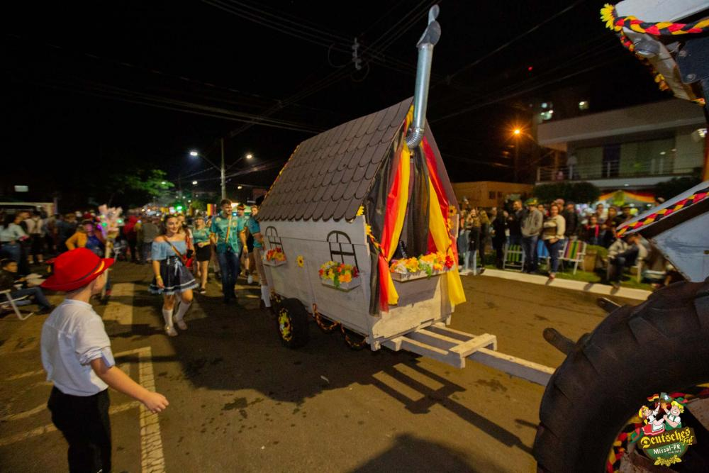

Sobre Missal, nossa cidade...
Localizada no oeste do Paraná A Cidade de Missal Os habitantes se chamam missalenses. O município se estende por 324,4 km² e contava com 10.702 habitantes no último censo. A densidade demográfica é de 33 habitantes por km² no território do município. Vizinho dos municípios de Itaipulândia, Diamante D'Oeste e Ramilândia, Missal se situa a 25 km a Norte-Oeste de Medianeira a maior cidade nos arredores. Situado a 302 metros de altitude, de Missal tem as seguintes coordenadas geográficas: Latitude: 25° 5' 14'' Sul, Longitude: 54° 14' 43'' Oeste..
O Nosso Município: Proporciona plantio de árvores nativas, cada vez mais encantando com a natureza exuberante e cheia de diversidade.

O Rio São Vicente é muito utilizado pela comunidade, tanto para lazer como também como fonte de água para agricultores e a sociedade em geral. O Muncípio proporciona a ca certo tempo a limpeza dos seus arredores, assim mantendo a natureza intacta.
Atrativos do Município
- Praia Municipal do Lago de Itaipu
- Ponte Molhada


Um pouco de história...
A Primeira Deutsches Fest foi realizada no município de Missal no ano de 2002, nos dias 03, 04 e 05 de abril. A Partir desta data tornou-se uma festa anual no município.
Os mentores da Festa Alemã de Missal foram pessoas que participavam da Câmara Júnior, atualmente extinta no município, que é uma das maiores organizações voluntária de jovens do mundo.
Um dos objetivos da referida Câmara Júnior é desenvolver em seus integrantes, habilidades de liderança que gerem atitudes e ações empreendedoras e contribuir para o progresso da comunidade mundial.
Umas das formas de manter viva a tradição germânica é através da Dança. Durante o evento, são diversos momentos culturais que buscam resgatar e manter viva a característica dos antepassados, sempre com muita alegria, disposição, onde, além de tudo isso, os traços, as roupas e a forma como se comportam, remetem à Cultura.
 Os Desfiles são realizados passando pelo centro da cidade, se deslocando até o local do Evento. Esta parte da festa fortalece a cultura germanica e trazendo muita alegria.
Os Desfiles são realizados passando pelo centro da cidade, se deslocando até o local do Evento. Esta parte da festa fortalece a cultura germanica e trazendo muita alegria.

A origem dos pratos típicos é essencialmente germânica, com o gostinho do tempero missalense. Entre eles destacam-se o Eisbein (Joelho de porco), Marreco Recheado, chucrute, salsichão, repolho roxo, purê de batata e Cuca Missal.

Professor: Leandro Marcos Weizenmann
Colégio Estadual Teotônio Villela
Primeiro Ano do Novo Ensino Médio - Professor Formador 2022